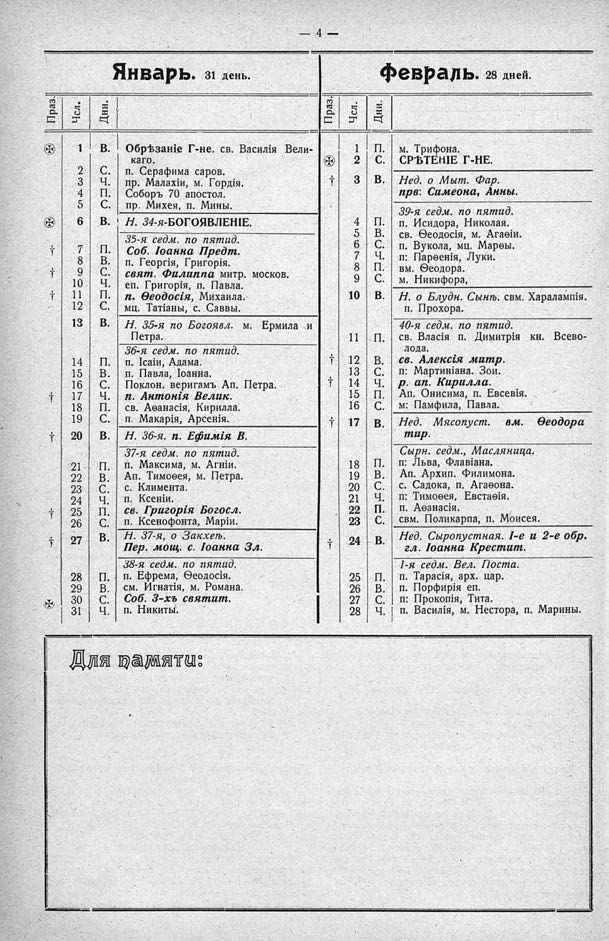

Лист источника 50
Скан

Распознанный текст
- 4 -
Январь. 31 день.
Праз. Чсл. Дни.
✠ 1 В. Обрѣзаніе Г-не. св. Василія Вели-
каго.
2 С. п. Серафима саров.
3 Ч. пр. Малахіи, м. Гордія.
4 П. Соборъ 70 апостол.
5 С. пр. Михея, п. Мины.
✠ 6 В. Н. 34-я-БОГОЯВЛЕНІЕ.
35-я седм. по пятид.
† 7 П. Соб. Іоанна Предт.
8 В. п. Георгія, Григорія.
† 9 С. свят. Филиппа митр. москов.
10 Ч. еп. Григорія, п. Павла.
† 11 П. п. Ѳеодосія, Михаила.
12 С. мц. Татіаны, с. Саввы.
13 В. Н. 35-я по Богоявл. м. Ермила и
Петра.
36-я седм. по пятид.
14 П. п. Ісаіи, Адама.
15 В. п. Павла, Іоанна.
16 С. Поклон. веригамъ Ап. Петра.
† 17 Ч. п. Антонія Велик.
18 П. св. Аѳанасія, Кирилла.
19 С. п. Макарія, Арсенія.
† 20 В. Н. 36-я. п. Евѳимія В.
37-я седм. по пятид.
21 П. п. Максима, м. Агніи.
22 В. Ап. Тимоѳея, м. Петра.
23 С. с. Климента.
24 Ч. п. Ксеніи.
† 25 П. св. Григорія Богосл.
26 С. п. Ксенофонта, Маріи.
† 27 В. Н. 37-я, о Закхеѣ.
Пер. мощ. с. Іоанна Зл.
38-я седм. по пятид.
28 П. п. Ефрема, Ѳеодосія.
29 В. см. Игнатія, м. Романа.
✠ 30 С. Соб. 3-хъ святит.
31 Ч. п. Никиты.
Февраль. 28 дней.
Праз. Чсл. Дни.
1 П. м. Трифона.
✠ 2 С. СРѢТЕНІЕ Г-НЕ.
† 3 В. Нед. о Мыт. Фар.
прв: Симеона, Анны.
39-я седм. по пятид.
4 П. п. Исидора, Николая.
5 В. св. Ѳеодосія, м. Агаѳіи.
6 С. п. Вукола, мц. Марѳы.
7 Ч. п: Парѳенія, Луки.
8 П. вм. Ѳеодора.
9 С. м. Никифора,
10 В. Н. о Блудн. Сынѣ. свм. Харалампія.
п. Прохора.
40-я седм. по пятид.
11 П. св. Власія п. Димитрія кн. Всево-
лода.
† 12 В. св. Алексія митр.
13 С. п: Мартиніана. Зои.
† 14 Ч. р. ап. Кирилла.
15 П. Ап. Онисима, п. Евсевія.
16 С. м: Памфила, Павла.
† 17 В. Нед. Мясопуст. вм. Ѳеодора
тир.
Сырн. седм., Масляница.
18 П. п: Льва, Флавіана.
19 В. Ап. Архип. Филимона.
20 С. с. Садока, п. Агаѳона.
21 Ч. п: Тимоѳея, Евстаѳія.
22 П. п. Аѳанасія.
23 С. свм. Поликарпа, п. Моисея.
† 24 В. Нед. Сыропустная. 1-е и 2-е обр.
гл. Іоанна Крестит.
1-я седм. Вел. Поста.
25 П. п. Тарасія, арх. цар.
26 В. п. Порфирія еп.
27 С. п: Прокопія, Тита.
28 Ч. п. Василія, м. Нестора, п. Марины.
Для памяти: